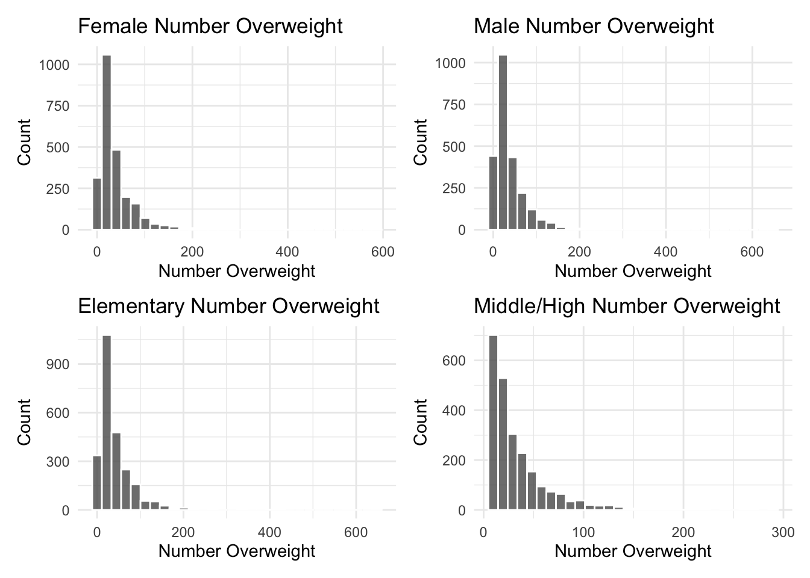

—Two sample t-test
T-test for Means in Sex Groups
First, we need to check for normality assumptions.
normality_check1 = cleaned_data |>
filter(sex=="FEMALE") |>
ggplot(aes(x = number_overweight), theme(plot.margin = unit(c(1, 1, 1, 1), "lines"))) +
geom_histogram(alpha = 0.8, color = "white") +
labs(
x = "Number Overweight" ,
y = "Count",
title = "Female Number Overweight")
normality_check2 = cleaned_data |>
filter(sex=="MALE") |>
ggplot(aes(x = number_overweight), theme(plot.margin = unit(c(1, 1, 1, 1), "lines"))) +
geom_histogram(alpha = 0.8, color = "white") +
labs(
x = "Number Overweight" ,
y = "Count",
title = "Male Number Overweight")
normality_check3 = cleaned_data |>
filter(grade_level=="ELEMENTARY") |>
ggplot(aes(x = number_overweight), theme(plot.margin = unit(c(1, 1, 1, 1), "lines"))) +
geom_histogram(alpha = 0.8, color = "white") +
labs(
x = "Number Overweight" ,
y = "Count",
title = "Elementary Number Overweight")
normality_check4 = cleaned_data |>
filter(grade_level=="MIDDLE/HIGH") |>
ggplot(aes(x = number_overweight), theme(plot.margin = unit(c(1, 1, 1, 1), "lines"))) +
geom_histogram(alpha = 0.8, color = "white") +
labs(
x = "Number Overweight" ,
y = "Count",
title = "Middle/High Number Overweight")
combined_plot = normality_check1 + normality_check2 + normality_check3 + normality_check4
combined_plot_layout = combined_plot +
plot_layout(ncol = 2, nrow = 2)
combined_plot_layout
From the histogram, the number of overweight students in four groups are all right-skewed, so we need to perform a log transformation before testing. Here are the distributions after transformation.
t_test_data = cleaned_data |>
mutate(log_number_overweight = log(number_overweight + 1))
normality_check1 = t_test_data |>
filter(sex=="FEMALE") |>
ggplot(aes(x = log_number_overweight), theme(plot.margin = unit(c(1, 1, 1, 1), "lines"))) +
geom_histogram(alpha = 0.8, color = "white") +
labs(
x = "Log Number Overweight" ,
y = "Count",
title = "Log Female Number Overweight")
normality_check2 = t_test_data |>
filter(sex=="MALE") |>
ggplot(aes(x = log_number_overweight), theme(plot.margin = unit(c(1, 1, 1, 1), "lines"))) +
geom_histogram(alpha = 0.8, color = "white") +
labs(
x = "Log Number Overweight" ,
y = "Count",
title = "Log Male Number Overweight")
normality_check3 = t_test_data |>
filter(grade_level=="ELEMENTARY") |>
ggplot(aes(x = log_number_overweight), theme(plot.margin = unit(c(1, 1, 1, 1), "lines"))) +
geom_histogram(alpha = 0.8, color = "white") +
labs(
x = "Log Number Overweight" ,
y = "Count",
title = "Log Elementary Number Overweight")
normality_check4 = t_test_data |>
filter(grade_level=="MIDDLE/HIGH") |>
ggplot(aes(x = log_number_overweight), theme(plot.margin = unit(c(1, 1, 1, 1), "lines"))) +
geom_histogram(alpha = 0.8, color = "white") +
labs(
x = "Log Number Overweight" ,
y = "Count",
title = "Log Middle/High Number Overweight")
combined_plot = normality_check1 + normality_check2 + normality_check3 + normality_check4
combined_plot_layout = combined_plot +
plot_layout(ncol = 2, nrow = 2)
combined_plot_layoutNow, the distributions look roughly normal.
Check equality of variance:
Test for Equality of Variances by Sex
t_test_data |>
levene_test(log_number_overweight ~ sex) |>
knitr::kable(title = "Test for Equality of Variances by Sex")| df1 | df2 | statistic | p |
|---|---|---|---|
| 1 | 32719 | 14.11696 | 0.0001721 |
Test for Equality of Variances by Grade Level
t_test_data |>
levene_test(log_number_overweight ~ grade_level) |>
knitr::kable(title="Test for Equality of Variances by Grade Level")| df1 | df2 | statistic | p |
|---|---|---|---|
| 3 | 32717 | 8.829417 | 7.6e-06 |
Since the p-values for both are not significant, we will use independent t-test with equal variance.
We want to conduct a two-sample t-test to compare the average number of overweight female students across two different educational levels: elementary and middle/high school.
female_data = t_test_data[t_test_data$sex == 'FEMALE', ]
elementary_data = female_data[female_data$grade_level == 'ELEMENTARY', 'log_number_overweight']
middle_high_data = female_data[female_data$grade_level == 'MIDDLE/HIGH', 'log_number_overweight']
t_test_result = t.test(elementary_data, middle_high_data, var.equal = TRUE)
print(t_test_result)##
## Two Sample t-test
##
## data: elementary_data and middle_high_data
## t = 13.204, df = 16299, p-value < 2.2e-16
## alternative hypothesis: true difference in means is not equal to 0
## 95 percent confidence interval:
## 0.1409575 0.1901009
## sample estimates:
## mean of x mean of y
## 3.345541 3.180011The test results suggest that there is a statistically significant difference in the mean log number of female overweight students between elementary and middle/high schools, with elementary schools having a higher mean on the log scale, given the very low p-value and the confidence interval that does not include zero.
Next, we conduct a two-sample t-test to compare the average number of overweight male students across two different educational levels: elementary and middle/high school.
male_data = t_test_data[t_test_data$sex == 'MALE', ]
elementary_data = male_data[male_data$grade_level == 'ELEMENTARY', 'log_number_overweight']
middle_high_data = male_data[male_data$grade_level == 'MIDDLE/HIGH', 'log_number_overweight']
t_test_result = t.test(elementary_data, middle_high_data, var.equal = TRUE)
print(t_test_result)##
## Two Sample t-test
##
## data: elementary_data and middle_high_data
## t = 17.849, df = 16408, p-value < 2.2e-16
## alternative hypothesis: true difference in means is not equal to 0
## 95 percent confidence interval:
## 0.2017759 0.2515608
## sample estimates:
## mean of x mean of y
## 3.348104 3.121436There is a statistically significant difference between the mean log number of male overweight students in elementary schools compared to middle/high schools, with elementary schools having a higher mean on the log scale, given the 2.367e-13 low p-value and the confidence interval that does not include zero.
T-test for Means in Grade Level
Next, we conduct a two-sample t-test to compare the average number of overweight elementary students across two different sex groups: male and female.
elementary = t_test_data[t_test_data$grade_level == 'ELEMENTARY', ]
male = elementary[elementary$sex == 'MALE', 'log_number_overweight']
female = elementary[elementary$sex == 'FEMALE', 'log_number_overweight']
t_test_result = t.test(male, female, var.equal = TRUE)
print(t_test_result)##
## Two Sample t-test
##
## data: male and female
## t = 0.20392, df = 17052, p-value = 0.8384
## alternative hypothesis: true difference in means is not equal to 0
## 95 percent confidence interval:
## -0.02207995 0.02720753
## sample estimates:
## mean of x mean of y
## 3.348104 3.345541The t-test results suggest that there is no significant difference in the mean log number of overweight students in elementary school students between male and female sex groups, given that p-value 0.9557 is greater than 0.05 at 95% confidence level. The means are nearly identical, and the statistical analysis does not provide evidence of a meaningful disparity.
Then, we conduct a two-sample t-test to compare the average number of overweight middle/high school students across two different sex groups: male and female.
elementary = t_test_data[t_test_data$grade_level == 'MIDDLE/HIGH', ]
male = elementary[elementary$sex == 'MALE', 'log_number_overweight']
female = elementary[elementary$sex == 'FEMALE', 'log_number_overweight']
t_test_result = t.test(male, female, var.equal = TRUE)
print(t_test_result)##
## Two Sample t-test
##
## data: male and female
## t = -4.6404, df = 15655, p-value = 3.506e-06
## alternative hypothesis: true difference in means is not equal to 0
## 95 percent confidence interval:
## -0.08331779 -0.03383302
## sample estimates:
## mean of x mean of y
## 3.121436 3.180011The t-test results also suggest that there is no significant difference in the mean log number of overweight students in middle/high school students between male and female sex groups, given that p-value 0.1223 is greater than 0.05 at 95% confidence level.
—Regression
SLR - Sex vs Percentage of Overweight
train_data =
cleaned_data |>
select(year, sex, grade_level,
number_overweight, percent_overweight,
number_obese, percent_obese,
number_overweight_or_obese, percent_overweight_or_obese,
number_healthy_weight, percent_healthy_weight) |>
mutate(sex = ifelse(sex=="FEMALE", 0, 1),
grade_level = ifelse(grade_level=="ELEMENTARY", 0, 1)) |>
drop_na()Check if outcome is normally distributed.
school_level_dist = train_data |>
ggplot(aes(x = percent_overweight)) +
geom_histogram(alpha = 0.8, color = "white") +
labs(
x = "Percent Overweight" ,
y = "Count",
title = "Distribution of Percent Overweight at Finer School Level")
ggplotly(school_level_dist)The outcome is roughly normal, so no transformation needed.
Check for normality of residuals.
model1 = lm(percent_overweight ~ sex, data = train_data)
hist(resid(model1), breaks = "FD", main = "Histogram of Residuals")
Check for homocedasticity.
plot(fitted(model1), resid(model1))
abline(h = 0, col = "red")
The variance of the residuals is roughly constant across all levels of the predictor and the residuals are also normally distributed. So assumptions for linear regression are checked. We can proceed to conduct the prediction.
Fit the model.
sex_slr = lm(percent_overweight ~ sex, data = train_data)
sex_slr_df = sex_slr |> broom::tidy()
knitr::kable(sex_slr_df)| term | estimate | std.error | statistic | p.value |
|---|---|---|---|---|
| (Intercept) | 17.698245 | 0.0352511 | 502.06230 | 0 |
| sex | -1.217539 | 0.0497622 | -24.46716 | 0 |
The SLR model we fit is percent_overweight at school-level = 17.546446 - 1.177219 * sex.
The coefficient estimate of -1.177219 with a p-value of almost 0 indicates that the effect of sex on the percentage of overweight students is statistically significant.
Since female is encoded as the reference group 0, we can say that male students group in NY schools had lower percentage of overweight students compared to female students group. This corresponds to the line plot visualization displayed in the previous section, where the line for male students is always below that for female students.
SLR - Grade Level vs Percent of Overweight
Check for normality of residuals.
model2 = lm(percent_overweight ~ grade_level, data = train_data)
hist(resid(model2), breaks = "FD", main = "Histogram of Residuals")
Check homosdasticity.
plot(fitted(model2), resid(model2))
abline(h = 0, col = "red")The variance of the residuals is roughly constant across all levels of the predictor and the residuals are also normally distributed. So assumptions for linear regression are checked. We can proceed to conduct the prediction.
Fit the model.
grade_level_slr = lm(percent_overweight ~ grade_level, data = train_data)
grade_level_slr_df = grade_level_slr |> broom::tidy()
knitr::kable(grade_level_slr_df)| term | estimate | std.error | statistic | p.value |
|---|---|---|---|---|
| (Intercept) | 16.239979 | 0.0341128 | 476.06768 | 0 |
| grade_level | 1.769576 | 0.0492989 | 35.89485 | 0 |
The SLR model we fit is percent_overweight at school-level = 16.126602 - 1.716477 * grade_level.
The coefficient estimate of 1.716477 with a p-value of almost 0 indicates that the effect of grade_level on the percentage of overweight students is statistically significant.
Since elementary school is encoded as the reference group 0, we can say that middle/high school students in NY had higher percentage of overweight students compared to elementary school students. This also corresponds to the line plot visualization displayed in the previous section, where the line for elementary students is always below that for middle/high school students.
MLR - Grade Level & Sex vs Percent of Overweight
mlr = lm(percent_overweight ~ grade_level + sex, data = train_data)
mlr_df = mlr |> broom::tidy()
knitr::kable(mlr_df)| term | estimate | std.error | statistic | p.value |
|---|---|---|---|---|
| (Intercept) | 16.851964 | 0.0416825 | 404.29335 | 0 |
| grade_level | 1.773623 | 0.0488329 | 36.32024 | 0 |
| sex | -1.223396 | 0.0487894 | -25.07505 | 0 |
The MLR model we fit is percent_overweight at school-level = 16.717571 - -1.179560 * grade_level + 1.718086 * grade_level.
The coefficient estimates with p-values of almost 0 indicates that the effect of both sex and grade_level on the percentage of overweight students are statistically significant.
Next, we use anova to check if SLR (with only sex or grade level) is more preferrable than MLR.
anova(sex_slr, grade_level_slr, mlr)## Analysis of Variance Table
##
## Model 1: percent_overweight ~ sex
## Model 2: percent_overweight ~ grade_level
## Model 3: percent_overweight ~ grade_level + sex
## Res.Df RSS Df Sum of Sq F Pr(>F)
## 1 32719 662765
## 2 32719 649322 0 13443
## 3 32718 637078 1 12243 628.76 < 2.2e-16 ***
## ---
## Signif. codes: 0 '***' 0.001 '**' 0.01 '*' 0.05 '.' 0.1 ' ' 1So, MLR is more preferrable than SLR here because the p-value is < 2.2e-16, which is significant at 5% alpha level.
MLR - Student Demographic Info vs Percent of Overweight
selected =
cleaned_data |>
select(year, district, percent_overweight, num_asian, num_black, num_hisp, num_am_ind, num_white)
district_level_data =
selected |>
group_by(year, district) |>
summarise(med_overweight = median(percent_overweight)) |>
drop_na()group_demo =
selected |>
group_by(year, district) |>
summarise(total_asian = max(num_asian),
total_black = max(num_black),
total_hisp = max(num_hisp),
total_am_ind = max(num_am_ind),
total_white = max(num_white)) |>
drop_na()result_df =
district_level_data |>
left_join(group_demo, by = c("year", "district")) |>
ungroup() |>
select(-district)overweight_dist = result_df |>
ggplot(aes(x = med_overweight)) +
geom_histogram(alpha = 0.8, color = "white") +
labs(
x = "Median Percent of Overweight" ,
y = "Count",
title = "Distribution of Median Percent of Overweight")
ggplotly(overweight_dist)The outcome distribution is roughly normal, so no transformation is needed.
Then, we will look at a correlation matrix to determine which variables to select as predictors.
cor_matrix = cor(result_df[, c(colnames(result_df))])We need to deal with the highly correlated predictor pairs before fitting the model.
# Find the pairs where correlation is greater than or equal to 0.7 but less than 1
high_cor_pairs = which(cor_matrix >= 0.7 & cor_matrix < 1, arr.ind = TRUE)
# Extract the variable names for these pairs
high_cor_var_pairs = data.frame(
Var1 = rownames(cor_matrix)[high_cor_pairs[, 1]],
Var2 = colnames(cor_matrix)[high_cor_pairs[, 2]],
Correlation = cor_matrix[high_cor_pairs]
)
high_cor_var_pairs## [1] Var1 Var2 Correlation
## <0 rows> (or 0-length row.names)There is no highly correlated pairs in all predictors. So, multicollinearity is cleared, now we can fit an MLR model.
mlr = lm(med_overweight ~ ., data = result_df)
display = mlr |> broom::tidy() |> knitr::kable()
display| term | estimate | std.error | statistic | p.value |
|---|---|---|---|---|
| (Intercept) | 146.5031318 | 55.9810271 | 2.617014 | 0.0089067 |
| year | -0.0638961 | 0.0277910 | -2.299164 | 0.0215517 |
| total_asian | -0.0015075 | 0.0001995 | -7.555289 | 0.0000000 |
| total_black | 0.0001524 | 0.0000544 | 2.801987 | 0.0051056 |
| total_hisp | 0.0002705 | 0.0000499 | 5.421625 | 0.0000001 |
| total_am_ind | 0.0023140 | 0.0008861 | 2.611519 | 0.0090509 |
| total_white | -0.0004473 | 0.0000348 | -12.849652 | 0.0000000 |
Plot residuals against fitted value
# Add predictions to the dataset
df_with_predictions = result_df |>
add_predictions(mlr, var = "fitted_values")
# Add residuals to the dataset
df_with_residuals = df_with_predictions |>
add_residuals(mlr, var = "residuals")
# Now plot the residuals against fitted values
ggplot(df_with_residuals, aes(x = fitted_values, y = residuals)) +
geom_point() +
geom_hline(yintercept = 0, linetype = "dashed", color = "red") +
labs(x = "Fitted Values", y = "Residuals", title = "Residuals against Fitted Values") +
theme_minimal()
There is no clear pattern shown in the plot, so it is pretty desirable. Overall, the residual plot suggests that the model has decent prediction performance. However, the potential increase in variance among the higher fitted values and the presence of outliers could be a concern.
The model we fit is: Median Percent of Overweight at District Level = 209.229 - 0.0928606 * year - 0.0014845 * total_asian + 0.0001223 * total_black + 0.0002993 * total_hisp + 0.0037642 * total_am_ind - 0.0003124 * total_white.
Except for the p-value for total_black and year, the coefficients for all other variables are significant. Among them, the total number of American Indian in that school district has the largest absolute value of coefficient. So, holding all other variables constant, with one person increase in the ethnic group of American Indians, there is a 0.0037642 percent increase in the median percent of overweight students at district level.
The regression analysis indicates that demographic factors, specifically the racial composition of students, have a statistically significant association with the median percentage of overweight students at the district level, as evidenced by the p-values for certain racial groups.
However, the magnitude of these associations, as reflected by the estimated coefficients, is relatively small. It is important to note that while these effects are statistically significant for some racial groups, the small size of the coefficients suggests that the practical significance of these demographic variables on the median percentage of overweight students might be limited.
MLR - Other Weight Status vs Percent of Overweight
train_data =
train_data |>
select(year, percent_overweight, percent_obese, percent_overweight_or_obese, percent_healthy_weight)mlr_weight = lm(percent_overweight ~ ., data = train_data)
display_weight = mlr_weight |> broom::tidy() |> knitr::kable(digits=3)
display_weight| term | estimate | std.error | statistic | p.value |
|---|---|---|---|---|
| (Intercept) | 0.086 | 0.497 | 0.173 | 0.863 |
| year | 0.000 | 0.000 | -0.042 | 0.967 |
| percent_obese | -1.000 | 0.000 | -8393.050 | 0.000 |
| percent_overweight_or_obese | 0.999 | 0.000 | 5605.985 | 0.000 |
| percent_healthy_weight | -0.061 | 0.017 | -3.600 | 0.000 |
Holding all other variables constant, with one percent increase in healthy weight students, there is a 0.039 percent increase in overweight students. However, this is not very significant as the p-value (0.262) for the coefficient is greater than 0.05 at an 95% confidence level.
MLR - Lunch Type vs Percent of Overweight
This prediction is only available for a few years’ data because some years do not contain the data record for free lunch and reduced lunch.
lunch =
cleaned_data |>
filter(year %in% c(2015, 2016, 2017)) |>
group_by(year, district) |>
summarise(total_num_free_lunch = max(num_free_lunch),
total_num_reduced_lunch = max(num_reduced_lunch))lunch_df =
district_level_data |>
left_join(lunch, by = c("year", "district")) |>
ungroup() |>
select(-district)mlr = lm(med_overweight ~ ., data = lunch_df)
display = mlr |> broom::tidy() |> knitr::kable()
display| term | estimate | std.error | statistic | p.value |
|---|---|---|---|---|
| (Intercept) | 565.4392923 | 172.9447918 | 3.269479 | 0.0010986 |
| year | -0.2721140 | 0.0857911 | -3.171821 | 0.0015414 |
| total_num_free_lunch | 0.0000723 | 0.0000402 | 1.797194 | 0.0724786 |
| total_num_reduced_lunch | 0.0000690 | 0.0005851 | 0.117926 | 0.9061400 |
The model we fit is: Median Percent of Overweight at District Level = 294.4593529 - 0.1377206 * year + 0.0000718 * total_num_free_lunch + 0.0001812 * total_num_reduced_lunch.
We might be able to say that having more free lunch and reduced lunch both are associated with increase in the median percent of overweight students at school-district level.
However, none of the predictors included in the model show a statistically significant relationship with the median percentage of overweight students at the school-district level, as all p-values are above the conventional threshold for significance (0.05).